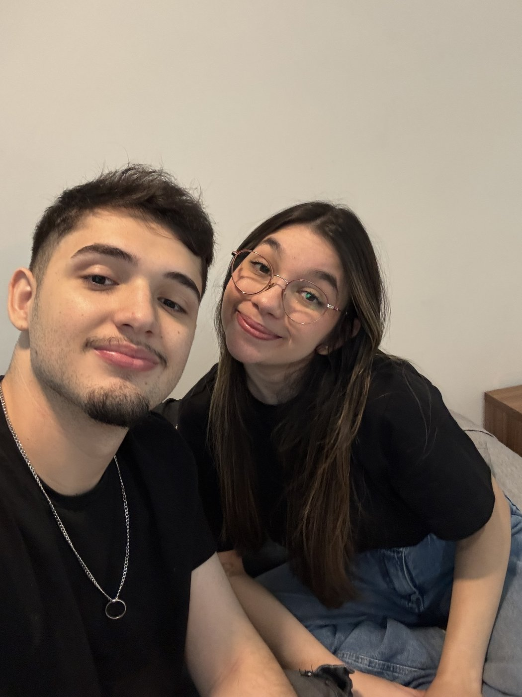
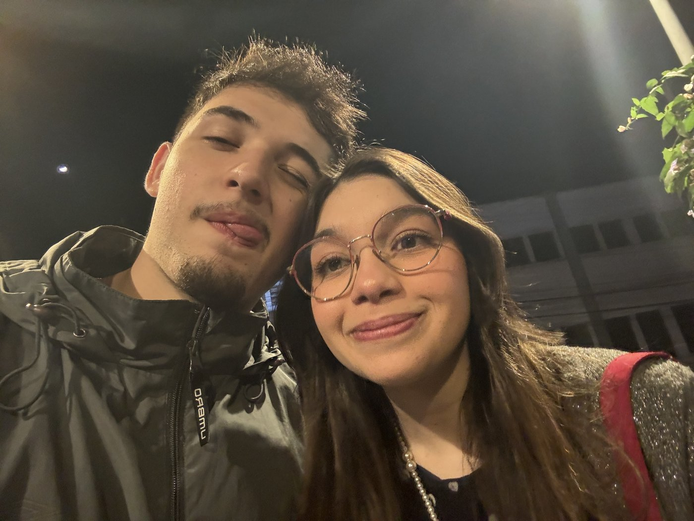
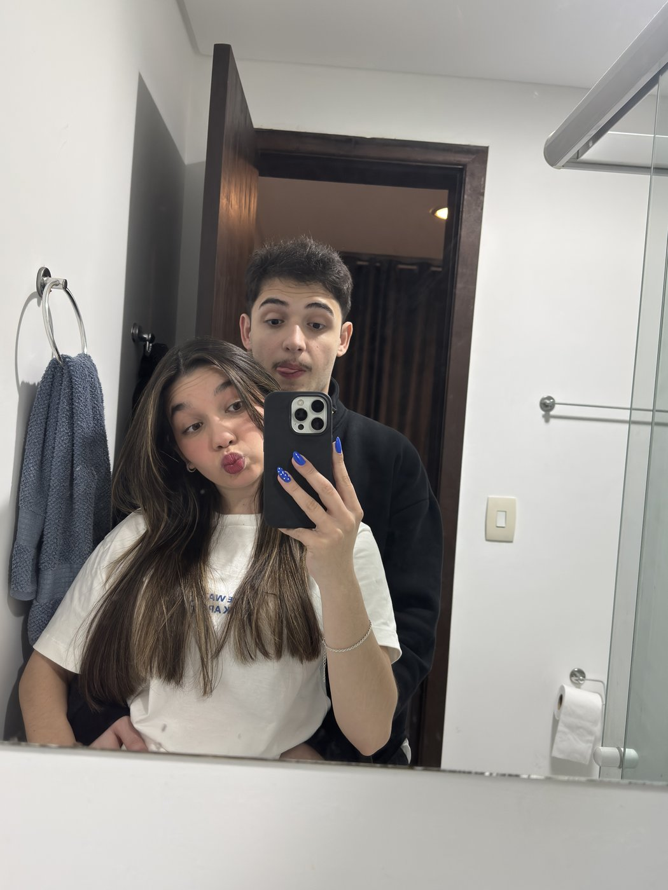
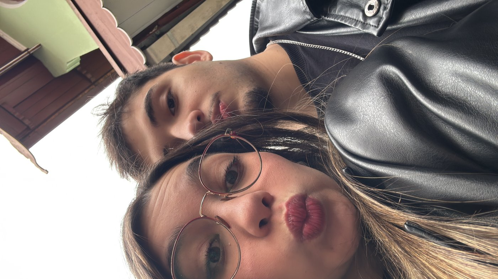
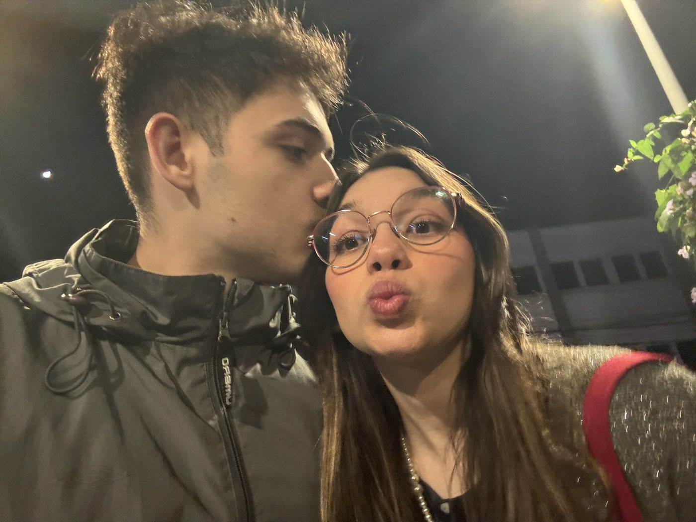

A retrospectiva das memórias e momentos que transformaram Aninha & Lulu em namorados.
🌻
🎵 "Te Esperando" — Luan Santana
A favorita da vida da Aninha 💕
Aperte o botão acima para começar com música ✨ (Segure na tela para pausar como no IG)
FAIXA 01 • ONDE TUDO COMEÇOU
A Cantada Lendária 💃✨
Naquela balada, o Lulu chegou com a cantada mais ousada e inesquecível de todas:
Lulu 🕺"Você sabia que hoje era festa à fantasia?"
Aninha 🤔"Não... por quê?"
Lulu 😏💘"Então por que você veio fantasiada de amor da minha vida?"
✨ E não era fantasia: virou a profecia mais linda da nossa vida!
FAIXA 02 • O SALTO HISTÓRICO
05 de Julho: "oi, luiz aq" 📱💬
A mensagem que mudou tudo. Saímos do direct do Instagram e o WhatsApp virou o nosso cantinho diário de conversas até de madrugada.
Luiz G. de Sallesoi luiz aq05/07/2026, 00:14 ✓✓
anaaa amor ☀️💘Oiiii 💕 Pode deixar Ksksksks Olhaaa no instaaaaa05/07/2026, 00:14 ✓✓
✨ A faísca virou fogueira: desde esse dia, nunca mais passamos 24h sem nos falar!
FAIXA 03 • ESTATÍSTICAS REAIS
Os Números da Nossa Sintonia 📊🔥
Se amor gerasse dados em servidores, a gente já tinha derrubado o WhatsApp:
💬
+44.700
Mensagens Trocadas
❤️
+520
"Te Amo" Registrados
☀️
Coração Rosa & Sol
Os emojis campeões absolutos da nossa conversa!
Média impressionante de mais de 400 mensagens por dia!
FAIXA 04 • NOSSAS FAIXAS MAIS TOCADAS
Os Momentos Favoritos 🎧✨
As músicas que tocaram no repeat da nossa história:
1
🍷 Nossos Dates Que Nunca Vão Parar
Encontros especiais que nunca vão deixar de acontecer
🥂
2
🍳 Nossas Receitas Duvidosas
Invenções na cozinha que sempre dão certo!
😋
3
🎬 Filmes Sem Fim
Recorde de 0 filmes terminados por motivos de beijos
😘
4
🚶♀️ Caminhar com a Minha Gata & Dengo
Mãos dadas, risadas e abraço que recarrega
🥺
♪ Álbum: "O Jeitinho Perfeito da Aninha" (Disco de Platina)
FAIXA 05 • NOSSO SÍMBOLO SECRETO
O Segredo dos Dois Girassóis 🌻🌻
Você já percebeu que eu sempre faço questão de te mandar dois girassóis?

Aninha 🌻
O meu solzinho (☀️) que ilumina cada amanhecer.
Lulu 🌻
O seu porto seguro e parceiro de todas as horas.
Em dias frios ou sem sol, os girassóis se voltam um para o outro para compartilhar calor e vida. É exatamente isso que somos nós dois!
FAIXA 06 • O MOMENTO DO SIM 💍
02 de Outubro: O Nosso Pedido ✨
A surpresa na minha casa, o frio na barriga e o SIM mais lindo do mundo:
▶
Oficialmente namorados! 🤍💍 O início do nosso "para sempre".
FAIXA 07 • NOSSO ÁLBUM DE FOTOS
Colecionando Momentos com Você 📸💛
Deslize ou toque nas fotos para ver cada memória nossa:

Meu Lugar Favorito

Nossos Jantares 🍝

Passeando Juntinhos 🚗

O Teu Abraço ☀️
✨ "Com você, qualquer lugar vira o melhor lugar do mundo."
FAIXA 08 • DEDICATÓRIA FINAL
Pra Sempre Com Você 💌🌻
🌻 De: Lulu • Para: Aninha2026 💖
Minha gatinha meiga, obrigado por existir e por trazer tanta luz para os meus dias.
Eu me apaixono todos os dias pelo seu caráter admirável, pela sua dedicação, pelo seu jeitinho carinhoso de ser e por essa nossa cumplicidade em caminhar de mãos dadas, inventar receitas duvidosas e trocar os beijos mais gostosos da Terra.
Que a nossa história continue sendo esse campo infinito de girassóis: cheia de calor, risadas e muito, muito amor!